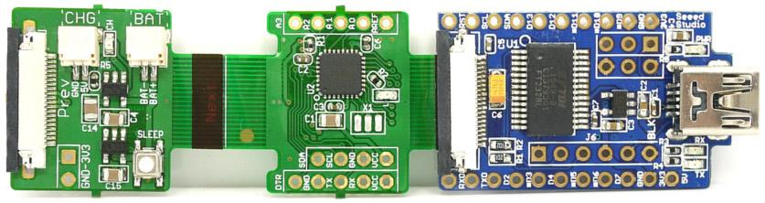
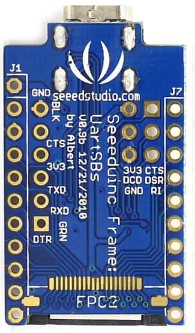

UartSB Frame is a USB based programming adapter for Seeeduino Film equipped with a FPC socket. The integrated USB UART IC FT232RL can be used for programming or communicating with MCUs with 3.3V logic. It also doubles as a "FT232RL" Low Voltage(3.3V) Breakout board. UartSB Frame provides breakouts for the bit-bang mode pins of FT232RL as well.This Bit-bang mode pins (8 I/O pins) can be used as a replacement for applications involving PC parallel port which is scares now a days.
Model:PGM31058P
| Microprocessor | FT232RL |
|---|---|
| PCB size | 35mm x 20mm |
| Indicators | POWER - Green LED, RX and TX - Red LEDs |
| Power supply | 3.3V and 5V DC |
| Interface | Mini-B USB, 2.54mm pitch pin header |
| Seeeduino Programming Port | 20 Pin FPC socket |
| Connectivity | USB |
| Communication Protocol | UART, Bit Bang I/O, SPI |
| Specification | Minimum | Typical | Maximum | Unit |
|---|---|---|---|---|
| Input voltage | - | 5 | 5 | Vdc |
| Current Consumption | - | - | 500 | mA |
| Output voltage | 3.3 | - | 5 | Vdc |
| Pad Name | Description |
|---|---|
| GND | Ground pin |
| 3v3 | 3.3V Power Supply |
| 5V | 5V Power supply from USB Port |
| RXD | UART Data input |
| TXD | UART Data output |
| CTS | UART Clear to Send Signal |
| RTS | UART Request to Send Signal |
| DTR | UART Data Terminal Ready Signal |
| DCD | UART Data Carrier Detect Signal |
| DSR | UART Data Set Ready Signal |
UartSB Frame is designed exclusively for flashing Seeeduino Film. It works as a USB to Serial Port (COM port) interface when connected to PC. This kind of configuration can be used to communicate with a MCU serial port.Also useful to program a MCU which support UART based ISP.


Download and install the Virtual COM port driver from FTDI website :
http://www.ftdichip.com/Drivers/VCP.htm


All modern GNU/Linux OS comes with FT232RL drivers. To check if UartSB Frame is detected, Issue a lsusb command. An output similar to below should appear.

GNU/Linux assigns /dev/ttyUSB0, /dev/ttyUSB1 etc... as device name.
To verify the working of serial port connect TxD and RxD pins of UartSB Frame and use a terminal application like cutecom to configure the device parameters as shown below.
Baudrate:9600, Data bits:8, Stop bits:None and no Handshake
Any character typed in terminal would be echoed back as shown.
The same functionality can be verified in Windows - Hyperterminal as well.
The USB 5v supply available in UartSB Frame breakout can be used to charge the battery of Seeeduino Film.
An nice feature of UartSB Frame compared to other FT232RL based USB-Serial devices is that all the Bit-Bang I/Os are brought to the header pins.
Bit-Bang mode is a special feature of FT232RL in which 8 I/O lines (D0 - D7) can be used as a general purpose bidirectional I/O lines. Three Bit-Bang modes are supported by FT232RL
Any data written to the device is clocked to the configured output pins. The rate of data transfer is configured based on baud rate generator. In this mode any of 8 I/O lines can be configured as input or ouput.
In this mode data is sent synchronously. An input is read before an output byte is sent to the device. Hence to read input, a write operation must be performed.
This is a special mode which requires reprogramming of FT232RL EEPROM. This uses signals C0 - C3.
Bit-Bang Mode of FT232RL is well documented in the application note[1]
Table: Bit-Bang I/O Mapping
| UartSB Frame Signal | BitBang I/O Signal |
|---|---|
| TxD | D0 |
| RxD | D1 |
| RTS | D2 |
| CTS | D3 |
| DTR | D4 |
| DSR | D5 |
| DCD | D6 |
| RI | D7 |
BitBang Mode Operation:
A simple Asynchronous Bit-Bang mode operation is demonstrated in the below breadboard arrangement in which DTR (D4) pin is connected to an LED. The LED blinking rate is controlled by the PC side application program.
LED Blinky Circuit
This above image is made with Fritzing.org
Bit Bang I/O Pins (ISP header) shown at Bottom Layer

Bit-Bang mode requires special FTDI direct driver called D2XX. This driver needs to be installed after removing the Virtual COM Port driver of FT232RL chip. In GNU/Linux this driver runs in kernel mode. As an alternative to D2XX an Free Open Source driver libFTDI is available. This works in Windows, GNU/Linux and Mac OS. It runs in user mode in GNU/Linux. Hence no need to remove the existing FT232RL driver.
libFTDI
http://www.intra2net.com/en/developer/libftdi/
libUSB libFTDI required libusb which can be downloaded from
The below example code can be compiled in the similar way as that of libFTDI example files. An easy way is to copy the contents of the below code to one of the existing example .c file and build the whole driver using
./configure
make
Code Example
/* Blinky.C: UartSBee v3.1 (FT232RL) Bit-Bang mode - Blinky. Circuit: Connect TXD to Anode of LED, Connect one end of resistor to GND and other end to Cathode of the LED */ #ifdef __WIN32__ #define sleep(x) Sleep(x) #endif // 8 bit pin mask for I/O pin #define TXD 0x01 #define RXD 0x02 #define RTS 0x04 #define CTS 0x08 #define DTR 0x10 #define DSR 0x20 #define DCD 0x40 #define RI 0x80 #include <stdio.h>; #include <ftdi.h>; int main() { unsigned char ouputState = 0; struct ftdi_context ftdic; /* 1. Initialize ftdi device context */ ftdi_init(&ftdic); /* 2. Open the device based of VID/PID pair */ if(ftdi_usb_open(&ftdic, 0x0403, 0x6001) < 0) { printf("Unable to open UartSBs Frame"); return 1; } /* 3. Enable Bit-Bang mode with for DTR line */ ftdi_set_bitmode(&ftdic, TXD, BITMODE_BITBANG); /* 4. Blink LED every 1 second */ while(1) { ouputState ^= TXD; ftdi_write_data(&ftdic,&ouputState, 1); sleep(1); } }
FT232RL Bit-Bang mode can be used to construct AVR ISP, JTAG, SPI and I2C Ports. Refer the external links.
UartSB Frame Programming Seeeduino Film (Do not connect Battery) |
Please list your question here:
If you have questions or other better design ideas, you can go to our forum or wish to discuss.
| Revision | Description | Editor | Release Date |
|---|---|---|---|
| V0.9b | Detailed Application Notes | Visweswara R | 22 Feb 2010 |
| Revision | Description | Release Date |
|---|---|---|
| UartSBs Frame | 0.9b | Feb 22, 2010 |
Bug Tracker is the place you can publish any bugs you think you might have found during use. Please write down what you have to say, your answers will help us improve our products.
The Additional Idea is the place to write your project ideas about this product, or other usages you've found. Or you can write them on Projects page.
Click here to buy UartSB Frame
This documentation is licensed under the Creative Commons Attribution-ShareAlike License 3.0. Source code and libraries are licensed under GPL/LGPL, see source code files for details.
Open Source Drivers
Other Sources of FT232RL application information